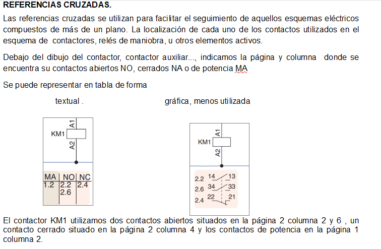
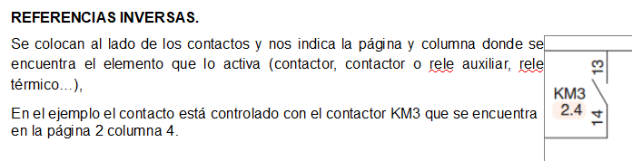

Referencias cruzadas directas e inversas
tienes que poner debajo del simbolo de las bobinas, que indique la página y columna donde estan sus contactos abiertos, cerrados y de potencia.
Referencias cruzadas inversas
se ponen debajo de los contactos, indican la página y columna donde se encuetra la bobina.
